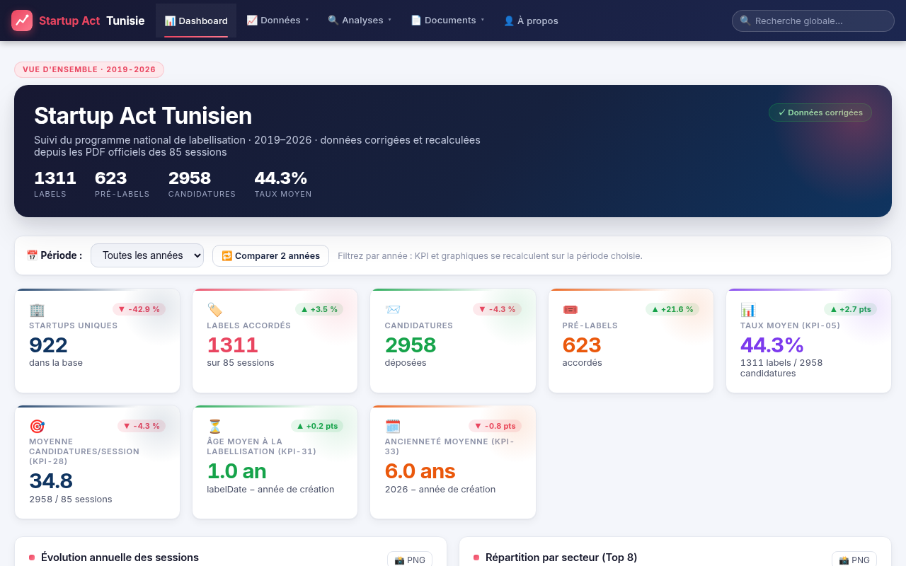

Startup Act Tunisie (2019-2026)
Projet académique en cours — Mastère Professionnel VIC, ESEN Manouba × ISCAE Manouba. Objectif : mesurer le réel du programme de labellisation Startup Act tunisien (Loi 2018-20) en analysant l'ensemble des 85 sessions publiées sur startup.gov.tn, puis restituer une vision fiable du parcours prélabel → label sous forme de tableau de bord interactif.
Veille & Data en chiffres
Des résultats réels issus de mon étude quantitative du programme Startup Act Tunisie — données extraites des PDF officiels de startup.gov.tn (85 sessions, 2019-2026).
Pourquoi ces corrections ? Les données extraites des PDF officiels de labellisation ne correspondaient pas au tableau « sessions » de startup.gov.tn : 20 sessions sur 85 y avaient des labels/prélabels mal comptés. Les chiffres affichés proviennent donc des PDF, re-extraits et recalculés session par session (source de vérité), avec 85/85 sessions vérifiées.
⚠️ Remarque : le nombre réel de startups labellisées est probablement supérieur (estimé à plus de 1 450), mais ces chiffres reflètent exactement ce qui est publié sur la plateforme officielle startup.gov.tn.